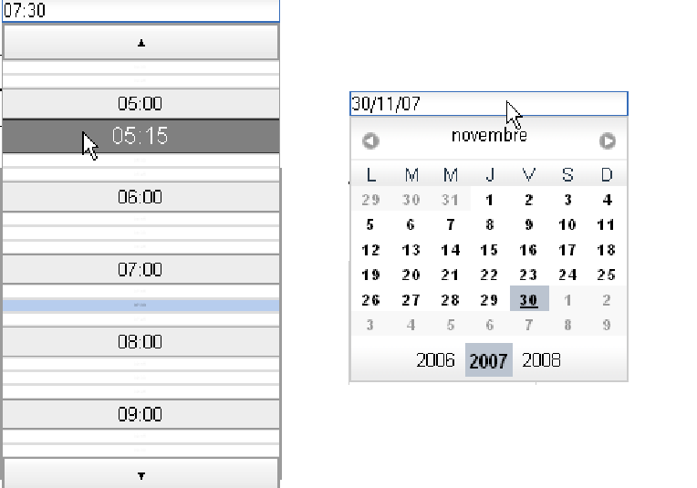
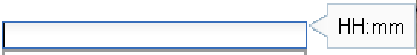
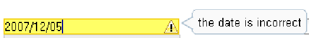

2.2.8 The DropdownContainer, DropdownDatePicker et DropdownTimePicker
components.
Tatami offers components which allow the simplification of an entered of
temporal information as date or a time. Both components which allow this are
DropdownDatePicker (at the left) for a date input and DropdownTimePicker (at
the right) for a time input. These two classes implement the abstract class
DropdownContainer allowing the input of temporal information.

The inputs are simplified due to the fact that the user will be able to select their
temporal information using a BasePicker component (ie, TimePicker or DatePicker).
Once its information was chosen, the field text of seizure will have the value of this
information and will be formatted.
Moreover, these components perform a validation on the entered text
and indicate in a tooltip the expected format (for example: hh:mm for time
information).

If the format is incorrect the user is warned by another tooltip and the color of
the text field changes:

2.2.8.1 Create a DropdownDatePicker.
The component DropdownDatePicker allows to grab a date in a text field via a
DatePicker component. So, the selected date will be formatted accordingly to the
user’s locale. Example: 08/28/2007 for a locale EN.
To import the class:
import com.objetdirect.tatami.client.DropdownDatePicker;
There are 2 constructors for a DropDwonDatePicker, one with two parameters
and one with no parameters. The parameters will have default values.
-
startDate:
- the lowest allowed value
-
endDate:
- the highest allowed value
An example:
DropdownDatePicker dddp =
new DropdownDatePicker();
Or
DropdownDatePicker dddp =
new DropdownDatePicker(startDate, endDate);
This creates our component, which has to be attached to the browser.
2.2.8.2 Create a DropdownTimePicker.
The DropdownTimePicker component permits to enter a time with hours and
minutes in an text fied via the TimePicker component. So, the selected date will be
formatted accordingly to a defined time pattern. Example: 2:30
To import the class:
import com.objetdirect.tatami.client.DropdownTimePicker;
There are 3 constructors available. The most “complex” constructor needs 3
parameters. The others set some default values on these 3 parameters.
-
startDate:
- the lowest allowed value
-
endDate:
- the highest allowed value
-
timePattern:
- To format the time information. See the DOJO explanations for
more details about the time pattern. It’s like in JAVA for the most of
principals options. Default is "HH:mm"
An example:
DropdownTimePicker ddtp =
new DropdownTimePicker();
Or
DropdownTimePicker ddtp =
new DropdownTimePicker("HH:mm");
Or
DropdownTimePicker ddtp =
new DropdownTimePicker(startDate, endDate,"HH:mm");
This creates our component, which has to be attached to the browser.
2.2.8.3 The API of the DropdownTimePicker and DropdownDatePicker.
The API of these components comes from the DropdownContainer class.
-
void setDate(Date):
- sets the default selected date
-
Date getDate():
- get the currently selected date
-
void setTime(Date):
- sets the default selected time for a TimePicker
-
Date getTime():
- gets the default selected time for a TimePicker
-
void getMinDate():
- Returns the minimum available date in the calendar or
in the time picker
-
void getMaxDate():
- Returns the maximum available date in the calendar or
in the time picker
-
void addChangeListener(ChangeListener):
- Adds a ChangeListener when
the seletected date value changes.
-
void removeChangeListener(ChangeListener):
- Removes a
ChangeListener when the seletected date value changes.
-
void setText(String):
- Writes some text in the text field of the
DropdownContainer.
-
String getText():
- Returns the time information as a string.
-
void setEnabled(boolean):
- Enables or disables the DropdownContainer.
-
void setInvalidMessage(String):
- Sets the message displayed when the
user’s input is not valid.
-
String getInvalidMessage():
- Gets the message displayed when the user’s
input is not valid.
-
void setPromptMessage(String):
- Sets the message helping the user to
respect the expected format.
-
String getPromptMessage():
- Gets the message helping the user to respect
the expected format.
-
Boolean isValid():
- Indicates if the entered text is valid or not.
Below, you will find an example extracted from the project TatamiDemo-1.1 which
presents the DropdownTimePicker, DropdownDatePicker, TimePicker and
DatePicker components. These different components notify their change of values and
update some others components treating the same type of data. It’s means that the
DatePicker will be linked with the DropdownDatePicker and the TimePicker will be
linked with the DropdownTimePicker. So if the TimePicker is modified then it will
update the DropdownTimePicker if it’s necessary, same for the DatePicker with the
DropdownDatePicker.
private void initComponents() {
mainPanel =
new HorizontalPanel();
mainPanel.setSpacing(50);
VerticalPanel timePanel =
new VerticalPanel();
VerticalPanel datePanel =
new VerticalPanel();
datePanel.setSpacing(20);
timePanel.setSpacing(20);
inputDate =
new DropdownDatePicker();
inputDate.setInvalidMessage("the␣date␣is␣incorrect");
datePicker =
new DatePicker();
datePicker.setDate(
new Date());
datePanel.add(htmlInputDate);
datePanel.add(inputDate);
datePanel.add(htmlDatePicker);
datePanel.add(datePicker);
linkDropdownAndPicker(inputDate, datePicker);
inputTime =
new DropdownTimePicker();
inputTime.setPromptMessage("HH:mm");
TimePickerConstraints constraints=
new TimePickerConstraints();
constraints.clickableIncrement = TimePickerConstraints.EVERY_HALF_HOUR;
timePicker =
new TimePicker(constraints);
timePanel.add(htmlInputTime);
timePanel.add(inputTime);
timePanel.add(htmlTimePicker);
timePanel.add(timePicker);
linkDropdownAndPicker(inputTime, timePicker);
mainPanel.add(datePanel);
mainPanel.add(timePanel);
}
private void linkDropdownAndPicker(
final DropdownContainer container,
final BasePicker picker) {
container.addChangeListener(
new ChangeListener() {
public void onChange(Widget sender) {
if (!equalsObj(picker.getDate(), container.getDate())) {
picker.setDate(container.getDate());
}
}
});
picker.addChangeListener(
new ChangeListener() {
public void onChange(Widget sender) {
if (!equalsObj(container.getDate(), picker.getDate())) {
container.setDate(picker.getDate());
}
}
});
}